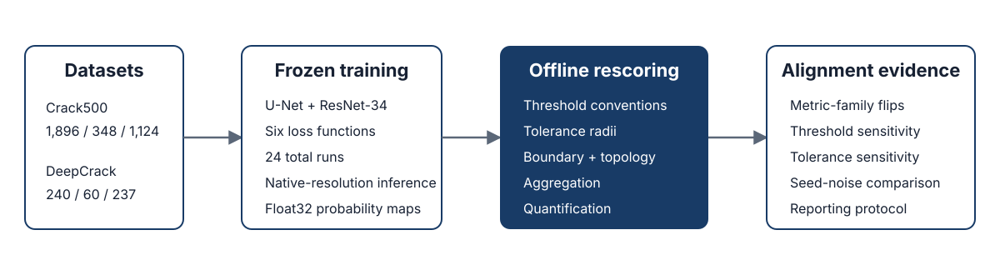
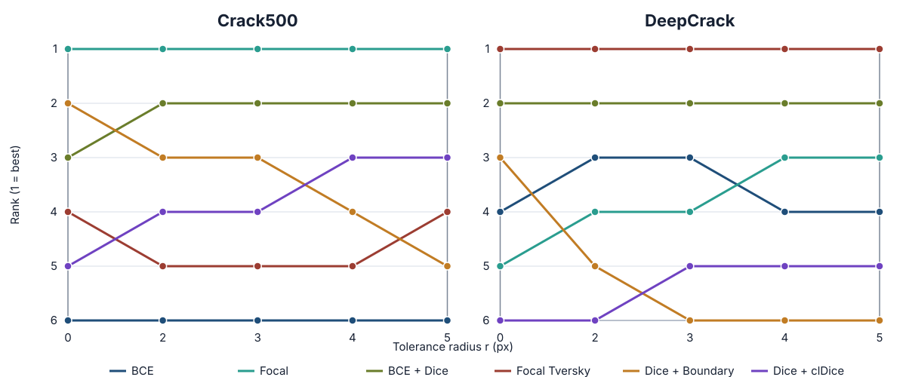

Loss–Metric Alignment for Deep Crack Segmentation
Department of Civil Engineering, Montana State University
Crack segmentation is governed by extreme imbalance, thin elongated geometry, connectivity, annotation-boundary uncertainty, and geometric quantification. A training objective can improve one property while a headline metric verifies another. This project treats loss selection and metric selection as one coupled claim–verifier problem.
The controlled demonstration answers this using identical saved probability maps. Models are trained once under a frozen protocol and rescored offline without retraining.

A single frozen training pipeline produces probability maps that are rescored under multiple evaluation conventions. The scoring convention—not retraining—is the manipulated axis.
The top overlap loss is not automatically the top boundary, topology, fragmentation, or quantification loss. Results below use the validation-selected deployable operating point.
| Loss | Global F1 | Boundary F1 | clDice | Fragmentation ↓ | Area error % ↓ | Skeleton error % ↓ |
|---|---|---|---|---|---|---|
| BCE | 0.733 ± 0.003 | 0.382 ± 0.003 | 0.761 ± 0.004 | 2.20 ± 0.06 | 7.3 ± 1.7 | 6.3 ± 1.1 |
| Focal | 0.740 ± 0.001 | 0.389 ± 0.003 | 0.764 ± 0.001 | 2.40 ± 0.29 | 7.7 ± 2.1 | 3.3 ± 3.2 |
| BCE + Dice | 0.736 ± 0.001 | 0.386 ± 0.003 | 0.769 ± 0.004 | 2.00 ± 0.06 | 6.1 ± 1.1 | 9.0 ± 1.7 |
| Focal Tversky | 0.733 ± 0.002 | 0.370 ± 0.004 | 0.773 ± 0.004 | 2.07 ± 0.04 | 17.2 ± 4.3 | 7.1 ± 2.9 |
| Dice + Boundary | 0.739 ± 0.001 | 0.382 ± 0.004 | 0.773 ± 0.005 | 1.94 ± 0.00 | 2.4 ± 0.6 | 16.1 ± 2.2 |
| Dice + clDice | 0.725 ± 0.001 | 0.353 ± 0.011 | 0.801 ± 0.008 | 2.02 ± 0.01 | 19.1 ± 3.4 | 73.6 ± 14.4 |
| Loss | Global F1 | Boundary F1 | clDice | Fragmentation ↓ | Area error % ↓ | Skeleton error % ↓ |
|---|---|---|---|---|---|---|
| BCE | 0.837 | 0.818 | 0.870 | 5.74 | 13.9 | 2.6 |
| Focal | 0.824 | 0.806 | 0.862 | 9.05 | 16.3 | 1.4 |
| BCE + Dice | 0.834 | 0.831 | 0.884 | 4.02 | 17.4 | 2.1 |
| Focal Tversky | 0.852 | 0.829 | 0.882 | 4.08 | 8.0 | 10.8 |
| Dice + Boundary | 0.833 | 0.829 | 0.877 | 2.36 | 18.3 | 14.2 |
| Dice + clDice | 0.799 | 0.736 | 0.862 | 2.01 | 6.5 | 3.6 |

Loss rank as a function of relaxed-F1 tolerance radius at native resolution. Rank 1 is best. Even when the top loss remains stable, lower-order rankings shift as the tolerance radius changes.
The protocol was fixed before offline scoring so that every ranking-sensitive choice is explicit and auditable.
p ≥ tDeployable: fixed 0.5 and validation-selected threshold.
Oracle upper bounds: ODS and OIS, which consume test labels and cannot be presented as operational performance.
python code/train_crack500_18runs.py
python code/train_deepcrack_6runs.py
python code/score_paper_probmaps.py
The datasets are not redistributed. Native-resolution probability maps, checkpoints, and the large per-image tables should be deposited in a versioned archival release because of their size.
@article{ghaffari2026lossmetric,
title = {What to Optimize and How to Measure It: Loss--Metric Alignment for Deep Crack Segmentation},
author = {Ghaffari, Ehsan and Wang, Kelvin C. P. and Barutha, Philip},
year = {2026},
note = {Manuscript in preparation},
url = {https://github.com/ehsanghaffari/loss-metric-alignment-crack-segmentation}
}